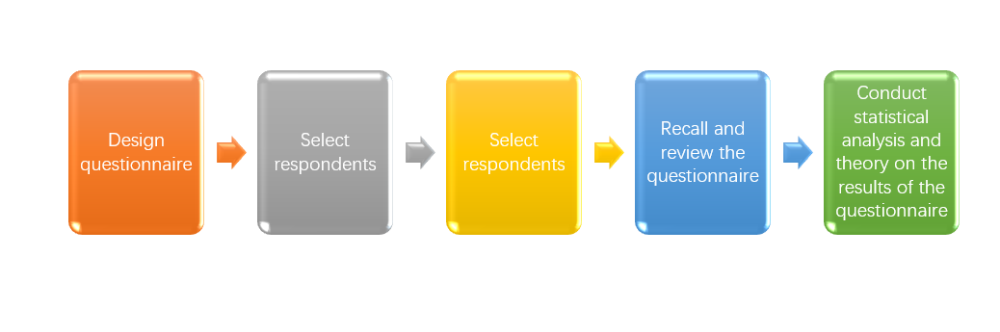

A complete survey process is as follow：
step1,Design questionnaire;
step2, Select respondents;
step3,Distribute questionnaires;
Step4 Recall and review the questionnaire;
step5,Conduct statistical analysis and theory on the results of the questionnaire;
There are all the process steps of the investigation.